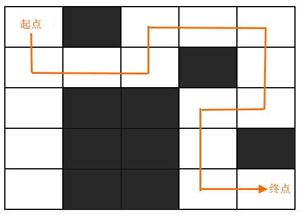

迷宫问题
迷宫问题指的是：在给定区域内，找到一条甚至所有从某个位置到另一个位置的移动路线。举个简单的例子，如图 1 所示，在白色区域内找到一条（甚至所有）从起点到终点的路线。
迷宫问题就可以采用回溯算法解决，即从起点开始，采用不断“回溯”的方式逐一试探所有的移动路线，最终找到可以到达终点的路线。
程序中，我们可以用特殊的字符表示迷宫中的不同区域。例如，用 1 表示可以移动的白色区域，用 0 表示不能移动的黑色区域，图 1 的迷宫可以用如下的 0-1 矩阵来表示：
结合伪代码，如下为解决迷宫问题的 C 语言程序：
如下为解决迷宫问题的 Java 程序：
如下为解决迷宫问题的 Python 程序：
以上程序的执行结果均为：

图 1 迷宫问题
图 1 迷宫问题
迷宫问题就可以采用回溯算法解决，即从起点开始，采用不断“回溯”的方式逐一试探所有的移动路线，最终找到可以到达终点的路线。
回溯算法解决迷宫问题
以图 1 所示的迷宫为例，回溯算法解决此问题的具体思路是：- 从当前位置开始，分别判断是否可以向 4 个方向（上、下、左、右）移动：
- 选择一个方向并移动到下个位置。判断此位置是否为终点，如果是就表示找到了一条移动路线；如果不是，在当前位置继续判断是否可以向 4 个方向移动；
- 如果 4 个方向都无法移动，则回退至之前的位置，继续判断其它的方向；
- 重复 2、3 步，最终要么成功找到可行的路线，要么回退至起点位置，表明所有的路线都已经判断完毕。
程序中，我们可以用特殊的字符表示迷宫中的不同区域。例如，用 1 表示可以移动的白色区域，用 0 表示不能移动的黑色区域，图 1 的迷宫可以用如下的 0-1 矩阵来表示：
1 0 1 1 1
1 1 1 0 1
1 0 0 1 1
1 0 0 1 0
1 0 0 1 1
输入 maze[ROW][COL] //输入迷宫地图，0 表示黑色区域，1 表示可行走区域
//(row,col) 表示起点，(outrow,outcol)表示终点
maze_puzzle(maze,row,col,outrow,outcol):
//回溯过程中，行走的每一区域都设为 Y，表示已经进行了判断
maze[row][col] <- 'Y'
//如果行走至终点，表明有从起点到终点的路线
if row == outrow && col == outcol:
Print maze // 输出行走路线
return
//判断是否可以向上移动
if canMove(maze,row-1,col):
maze_puzzle(maze,row-1,col,outrow,outcol)
//判断是否可以向左移动
if canMove(maze,row,col-1):
maze_puzzle(maze,row,col-1,outrow,outcol)
//判断是否可以向下移动
if canmove(maze,row+1,col):
maze_puzzle(maze,row+1,col,outrow,outcol)
//判断是否可以向右移动
if canmove(maze,row,col+1):
maze_puzzle(maze,row,col+1,outrow,outcol)
结合伪代码，如下为解决迷宫问题的 C 语言程序：
#include <stdio.h>
typedef enum { false, true } bool;
#define ROW 5
#define COL 5
//假设当前迷宫中没有起点到终点的路线
bool find = false;
//回溯算法查找可行路线
void maze_puzzle(char maze[ROW][COL], int row, int col, int outrow, int outcol);
//判断 (row,col) 区域是否可以移动
bool canMove(char maze[ROW][COL], int row, int col);
//输出行走路线
void printmaze(char maze[ROW][COL]);
int main()
{
char maze[ROW][COL] = {
{'1','0','1','1','1'},
{'1','1','1','0','1'},
{'1','0','0','1','1'},
{'1','0','0','1','0'},
{'1','0','0','1','1'} };
maze_puzzle(maze, 0, 0, ROW - 1, COL - 1);
if (find == false) {
printf("未找到可行线路");
}
return 0;
}
//(row,col) 表示起点，(outrow,outcol)表示终点
void maze_puzzle(char maze[ROW][COL], int row, int col, int outrow, int outcol) {
maze[row][col] = 'Y'; // 将各个走过的区域标记为 Y
//如果行走至终点，表明有从起点到终点的路线
if (row == outrow && col == outcol) {
find = true;
printf("成功走出迷宫,路线图为：\n");
printmaze(maze);
return;
}
//尝试向上移动
if (canMove(maze, row - 1, col)) {
maze_puzzle(maze, row - 1, col, outrow, outcol);
//如果程序不结束，表明此路不通，恢复该区域的标记
maze[row - 1][col] = '1';
}
//尝试向左移动
if (canMove(maze, row, col - 1)) {
maze_puzzle(maze, row, col - 1, outrow, outcol);
//如果程序不结束，表明此路不通，恢复该区域的标记
maze[row][col - 1] = '1';
}
//尝试向下移动
if (canMove(maze, row + 1, col)) {
maze_puzzle(maze, row + 1, col, outrow, outcol);
//如果程序不结束，表明此路不通，恢复该区域的标记
maze[row + 1][col] = '1';
}
//尝试向右移动
if (canMove(maze, row, col + 1)) {
maze_puzzle(maze, row, col + 1, outrow, outcol);
//如果程序不结束，表明此路不通，恢复该区域的标记
maze[row][col + 1] = '1';
}
}
//判断 (row,col) 区域是否可以移动
bool canMove(char maze[ROW][COL], int row, int col) {
//如果目标区域位于地图内，不是黑色区域，且尚未行走过，返回 true：反之，返回 false
return row >= 0 && row <= ROW - 1 && col >= 0 && col <= COL - 1 && maze[row][col] != '0' && maze[row][col] != 'Y';
}
//输出可行的路线
void printmaze(char maze[ROW][COL]) {
int i, j;
for (i = 0; i < ROW; i++) {
for (j = 0; j < COL; j++) {
printf("%c ", maze[i][j]);
}
printf("\n");
}
}
如下为解决迷宫问题的 Java 程序：
public class Demo {
static boolean find = false;
static int ROW = 5;
static int COL = 5;
//(row,col) 表示起点，(outrow,outcol)表示终点
public static void maze_puzzle(char [][] maze, int row, int col, int outrow, int outcol) {
maze[row][col] = 'Y'; // 将各个走过的区域标记为 Y
//如果行走至终点，表明有从起点到终点的路线
if (row == outrow && col == outcol) {
find = true;
System.out.println("成功走出迷宫,路线图为：");
printmaze(maze);
return ;
}
//尝试向上移动
if (canMove(maze, row - 1, col)) {
maze_puzzle(maze, row - 1, col, outrow, outcol);
//如果程序不结束，表明此路不通，恢复该区域的标记
maze[row - 1][col] = '1';
}
//尝试向左移动
if (canMove(maze, row, col - 1)) {
maze_puzzle(maze, row, col - 1, outrow, outcol);
//如果程序不结束，表明此路不通，恢复该区域的标记
maze[row][col - 1] = '1';
}
//尝试向下移动
if (canMove(maze, row + 1, col)) {
maze_puzzle(maze, row + 1, col, outrow, outcol);
//如果程序不结束，表明此路不通，恢复该区域的标记
maze[row + 1][col] = '1';
}
//尝试向右移动
if (canMove(maze, row, col + 1)) {
maze_puzzle(maze, row, col + 1, outrow, outcol);
//如果程序不结束，表明此路不通，恢复该区域的标记
maze[row][col + 1] = '1';
}
}
//判断(row,col)区域是否可以移动
public static boolean canMove(char [][] maze, int row, int col) {
//如果目标区域位于地图内，不是黑色区域，且尚未移动过，返回 true：反之，返回 false
return row >= 0 && row <= ROW - 1 && col >= 0 && col <= COL - 1 && maze[row][col] != '0' && maze[row][col] != 'Y';
}
//输出行走路线
public static void printmaze(char [][] maze) {
for(int i=0;i<ROW;i++) {
for(int j=0;j<COL;j++) {
System.out.print(maze[i][j]+" ");
}
System.out.println();
}
}
public static void main(String[] args) {
char [][]maze = new char[][]{
{'1','0','1','1','1'},
{'1','1','1','0','1'},
{'1','0','0','1','1'},
{'1','0','0','1','0'},
{'1','0','0','1','1'} };
maze_puzzle(maze, 0, 0, ROW - 1, COL - 1);
if (find == false) {
System.out.print("未找到可行线路");
}
}
}
如下为解决迷宫问题的 Python 程序：
#指定地图的行数和列数
ROW = 5
COL = 5
#初始化地图
maze =[['1','0','1','1','1'],
['1','1','1','0','1'],
['1','0','0','1','1'],
['1','0','0','1','0'],
['1','0','0','1','1']]
#假设当前迷宫中没有起点到终点的路线
find = False
#回溯算法查找可行路线
def maze_puzzle(maze,row,col,outrow,outcol):
global find
maze[row][col] = 'Y'
if row == outrow and col == outcol:
find = True
print("成功走出迷宫,路线图为：")
printmaze(maze)
return
if canMove(maze,row-1,col):
maze_puzzle(maze, row - 1, col, outrow, outcol)
#如果程序不结束，表明此路不通，恢复该区域的标记
maze[row - 1][col] = '1'
if canMove(maze, row, col - 1):
maze_puzzle(maze, row, col - 1, outrow, outcol)
#如果程序不结束，表明此路不通，恢复该区域的标记
maze[row][col - 1] = '1'
#尝试向下移动
if canMove(maze, row + 1, col):
maze_puzzle(maze, row + 1, col, outrow, outcol)
#如果程序不结束，表明此路不通，恢复该区域的标记
maze[row + 1][col] = '1'
#尝试向右移动
if canMove(maze, row, col + 1):
maze_puzzle(maze, row, col + 1, outrow, outcol)
#如果程序不结束，表明此路不通，恢复该区域的标记
maze[row][col + 1] = '1'
#判断(row,col)区域是否可以移动
def canMove(maze,row,col):
return row >= 0 and row <= ROW - 1 and col >= 0 and col <= COL - 1 and maze[row][col] != '0' and maze[row][col] != 'Y'
#输出行走路线
def printmaze(maze):
for i in range(0,ROW):
for j in range(0,COL):
print(maze[i][j],end=" ")
print()
maze_puzzle(maze,0,0,ROW-1,COL-1)
if find == False:
print("未找到可行路线")
以上程序的执行结果均为：
成功走出迷宫,路线图为：
Y 0 Y Y Y
Y Y Y 0 Y
1 0 0 Y Y
1 0 0 Y 0
1 00 Y Y
多个 Y 组成的路线就是从起点到终点的可行路线。
关注公众号「站长严长生」，在手机上阅读所有教程，随时随地都能学习。本公众号由C语言中文网站长亲自运营，长期更新，坚持原创。

微信扫码关注公众号